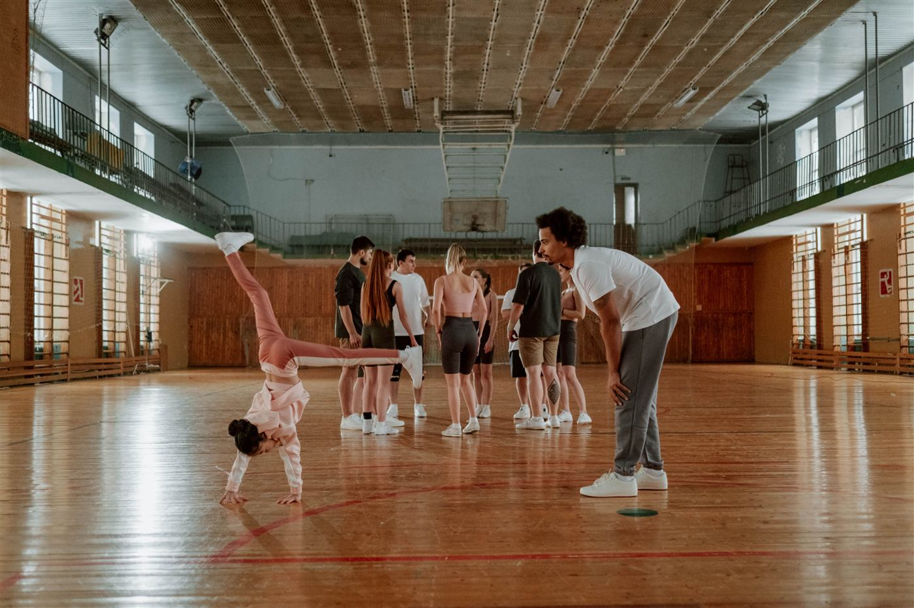

Straks deel je vanaf één euro geld met een Initiatief in je eigen buurt. Lokale ondernemers dragen de kosten, dus er gaat niets af.
Het platform is nog in opbouw. Op deze pagina lees je wat Mondéall wordt.
Lees wat Mondéall wordtVereniging, stichting, school of kerk
Op Mondéall plaatst een organisatie een Initiatief voor één concrete Voorziening. Inwoners delen mee vanaf € 1, en alles komt bij jullie aan. Drie vragen bepalen of je kunt starten.
Plaats je het Initiatief als vrijwilliger namens je organisatie? Dan ben jij de Starter. Je organisatie is de Begunstigde: zij ontvangt het geld.
De bankrekening staat op de naam van de organisatie zelf, niet op een privépersoon.
Weet je het niet? Kies dan ‘Weet ik niet’. Je kunt het navragen bij de penningmeester of de Belastingdienst.
Denk aan een AED, een gereedschapbank, nieuwe kleedkamers of zonnepanelen op het dorpshuis. Zo’n Voorziening is wat een Initiatief mogelijk maakt.
Dan zie je hier meteen of je bij Mondéall terecht kunt.
Maak een account aan en plaats je eerste Initiatief. Je hebt geen wachtwoord nodig: je logt in met een code die we mailen.
RegistrerenMondéall werkt alleen met verenigingen, stichtingen, kerkgenootschappen en scholen met een bankrekening op eigen naam. Het geld moet bij de organisatie zelf terechtkomen.
Vraag het na bij de penningmeester of kijk op de website van de Belastingdienst. Weet je het zeker? Kom dan terug en beantwoord de vraag opnieuw.
Een organisatie heeft de ANBI-status of SBBI-status nodig, direct of via een steunstichting. Heeft een steunstichting die status wel? Dan kan het Initiatief via die stichting lopen.
Een Initiatief is gericht op één concrete Voorziening die mensen samen gebruiken. Heb je een ander plan? Dan is Mondéall daar niet voor bedoeld.
Eén Initiatief is voor één Voorziening. Hebben jullie meer wensen, dan plaats je meer Initiatieven.
Voorbeelden · gemeente Lochem
Elk Initiatief begint bij iemand die de eerste stap zet: een bestuurslid, een leerkracht, een vrijwilliger. Straks kies je er een uit en deel je mee vanaf één euro. Alles komt aan, omdat Sponsors de kosten dragen.
Fictieve voorbeelden: het platform wordt gebouwd. Klik op een kaart voor de Initiatiefpagina.De volgorde wisselt bij elk bezoek. Zo krijgt geen Initiatief vaste voorrang. Geen ranglijst, geen doelbedrag.
Haal een filter weg of kies een andere Kern. Of start zelf een Initiatief voor jouw vereniging, stichting of school.
Start een InitiatiefDe kaart wordt geladen.
In vier korte stappen. Zo ziet het eruit als het platform er is.
Preview: het platform wordt gebouwd. Er wordt hier niets opgeslagen of verstuurd.Zo laten we je Initiatief zien bij de juiste gemeente en Kern.
PlaatsKies er één. Klik op een sector voor een korte toelichting.
Dit is altijd een vereniging, stichting, school of kerk, nooit een privépersoon of privérekening. Het geld dat mensen delen komt straks rechtstreeks bij deze organisatie terecht.
Naam van de organisatieHeb je al een Mondéall-account? Inloggen
Zo kun je straks terugkomen in je werkplaats, verder werken aan je Initiatief en later de terugkoppeling geven.
Hierna typ je een code uit deze mail over. Zo log je ook later in: met een code, zonder wachtwoord.
Nog één ding: we willen zeker weten dat dit jouw e-mailadres is. We stuurden een code naar jij@voorbeeld.nl, bewerken.
Deze code is 10 minuten geldig. Geen code gehad? Opnieuw versturen kan over 25 seconden.
Geld komt niet altijd waar het nodig is. Systemen zijn te complex geworden, te commercieel, of te onpersoonlijk. Mondéall maakt delen weer eenvoudig en menselijk.
"Mondéall maakt het voor iedereen mogelijk om altijd met een goed gevoel volwaardig geld te delen, zodat we samen vol vertrouwen en in vrijheid bijdragen aan een kleurrijke wereld en een bloeiende toekomst."
Mondéall is altijd een aanvulling op bestaande overheidsstructuren en subsidies, onder meer BOSA — nooit een vervanging.
Elk Initiatief valt binnen één van de twaalf sectoren. Klik op een sector voor de aandachtsgebieden.
Voor wie meer wil weten. Elke entiteit heeft één functie; de BV komt nooit in de giftstroom.
Mondéall is een aanvulling op bestaande subsidies en regelingen, geen vervanging. Wil je samenwerken? Neem contact op via de contactsectie hieronder.
Neem contact opMondéall komt voort uit de overtuiging dat delen weer persoonlijk en vertrouwd moet aanvoelen — niet complex, niet commercieel, niet anoniem. Het idee groeide vanuit de dagelijkse praktijk met verenigingen en gemeenschappen, en de vraag: hoe zorgen we dat wat we delen ook echt aankomt, met een goed gevoel voor iedereen die meedoet.

Sfeerbeeld ter illustratie — eigen fotografie van Mondéall-Initiatieven volgt.
Foto: Pulnb / PexelsMondéall is in opbouw. Dit verhaal beschrijft waar het vandaan komt, niet dat het platform al draait.
Laat je e-mailadres achter en we houden je op de hoogte zodra er meer te delen valt.
Of mail direct: info@mondeall.eu